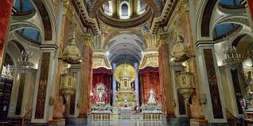
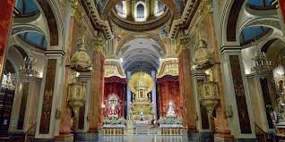
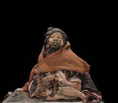
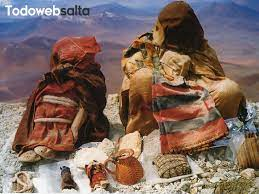
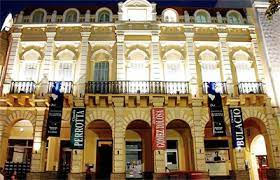
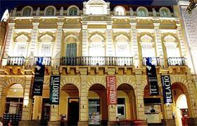

Catedral Basilica
La Catedral Basílica de Salta fue fundada en 1582 y se levanta en el solar destinado para la construcción de la Iglesia Matriz. En ella se encuentra el Santuario del Señor y la Virgen del Milagro, siendo testigo cada 15 de septiembre, de la multitudinaria procesión.
 

Museo Arqueologico de Alta Montaña
El Museo de Arqueología de Alta Montaña tiene como función principal resguardar el hallazgo arqueológico denominado “Los Niños del Llullaillaco”, lo que logra a través de un modernísimo sistema de crio preservación; y al mismo tiempo, estudiarlo y difundirlo. A través del patrimonio que preserva, trabaja en el resguardo de la cultura ancestral, reforzando la identidad de los pueblos originarios.
 Museo Historico del Norte
El edificio fue escenario de las juras de fidelidad a Carlos III, Carlos IV y Fernando VII. En su interior se encuentra El Museo Histórico del Norte Argentino, el cual posee nueve salas de exhibición a lo largo de las dos plantas del Cabildo, donde se preservan piezas y pinturas.
 
